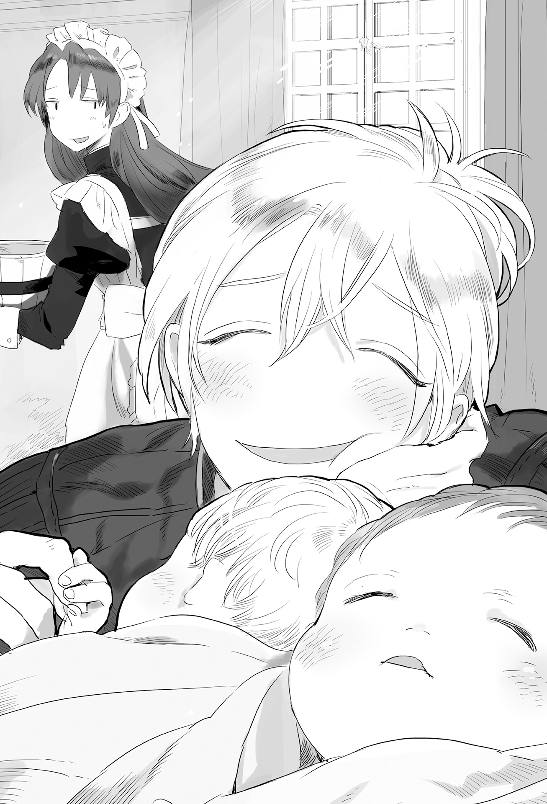

Chapter 1 – New Life
.
Part 1
The decisive battle against Haurelia Kingdom’s army finally ended with Antrim army’s victory through an extremely severe fight. All the troops erupted in a loud cheer that shook the ground.
However, the figure of Viscount Antrim, Baldr who should respond to those cheers couldn’t be found among them.
His mother Maggot who fought hard even with her pregnancy in the late stage collapsed after she relaxed from the victory. And then she went into labor right away.
Baldr was greatly shaken by the unexpected emergency situation.
Even with the cheat knowledge from Baldr’s previous life as Oka Masaharu, there was no detailed knowledge regarding childbirth there. At best there was only knowledge about hygiene by sterilization and the like.
「M-m-m-m-midwife, we’ve got to call a midwife here!」
「B-b-b-but, all the citizens has been evacuated from here hasn’t it?」
「Y-y-you’re right! What now!」
Even Alford who already had a daughter which was Silk was completely useless because he could only move about in confusion. No matter the world, the only male who could be useful when it came to childbirth was only doctor.
And yet in a stroke of bad luck, all the doctors who accompanied the troops here had no experience in childbirth. Normally their task was to treat the injured soldiers, so it couldn’t be helped.
Baldr was so flustered that anyone who saw him right now would question if this really was the hero of this battlefield. He and the others hurried to Gawain Castle in such state of panic.
「What to do? What to do……」
Baldr was completely breaking down that his imposing and gallant figure in the battlefield before this felt like a complete lie. Maggot shouted at him angrily.
「Don’t make a ruckus like that, it’s an eyesore! Oi, daughter-in-laws!」
「Yes-!」
Seyruun and the other girls immediately replied. Let’s kept it a secret for just the people here that Silk was also cunningly mixing herself among them.
「Think of it as a dry run for yourself in the future and help out! All of you men, get out! Also boil hot waters and prepare some clean clothes!」
「Roger-!」
Baldr rushed out of the castle with a speed that wouldn’t put a shame to the word of godspeed. Seeing that, his subordinate Brooks thought that he absolutely couldn’t comprehend it.
──Sure enough.
「Flame Bomb!」
Baldr fired magic into the water well, then he dropped the well bucket and drew up the boiling water to pour into a washbasin. Baldr then held up the washbasin with both hands and turned around to dash to where Maggot was.
Unfortunately, he returned while Maggot was changing into childbirth clothes that weren’t constricting the body.
「I have boiled some water, Kaa-san!」
「I said that men should get out, you oaf-!」
With a swiftness that was unthinkable from a woman whose water had broken and nearing the childbirth, she splendidly landed three consecutive strikes on Baldr’s crotch, solar plexus, and nose.
「……A-amazing……」
Brooks reflexively covered his crotch and backed away seeing that lightning speed combo.
He swore in his heart that he would never anger Maggot no matter what.
「Take away this idiot and keep bringing the hot water! Seyruun, stand at the door so the men won’t enter as they please!」
「Y-yhesssss!」
Following that command, the females heartlessly drove away Baldr who was still writhing in agony out of the room. They had transformed into soldiers who swore loyalty to their future mother-in-law.
「The baby might become your brother or sister-in-law. So put your spirit wholeheartedly into it!」
「Brother-in-law……」
「Sister-in-law……」
Other than Agatha, the three girls, Seyruun, Selina, and Silk were the youngest child or the only child in their family. So they had no younger sibling.
Their first younger sibling since they were born, furthermore the baby would also be Baldr’s sibling. No one could possibly criticize them for getting high-tensioned.
「We’ll do our best!」
.
「U-until I can see the face of my little sister……」
「Enough! You have worked really hard so rest already!」
For some reason Baldr was convinced that it would be a little sister who was born. Brooks who was worried for his well-being was ignored.
.
The childbirth was harder than expected. Perhaps it was because Maggot was of advanced age, or perhaps it was because of her absurd recklessness of fighting in the battlefield while heavily pregnant.
In order to quickly bring doctor and midwife who were the specialist in this matter, a squad of cavalries was deployed to the evacuation site, but it would take more than a day and a half no matter how much they rushed.
Amateur like Seyruun and the others were unable to judge whether the cause of Maggot’s difficult delivery was because of Maggot’s condition or because the baby was going through breech birth.
「W-what to do……」
「M-mother-in-law! Please tell us anything if there is something that we can do!」
In such large undertaking like childbirth that could only be comprehended between fellow woman, a strange feeling of solidarity was forming between Maggot and the daughter-in-laws.
「It also took a whole night when it was with Baldr. There is no way that Silver Light Maggot of all people won’t be able to endure just this much.」
Maggot grinned even while sweating bullets. Seyruun and others harbored respect that crossed generation seeing that.
Selina wiped the sweat on Maggot’s forehead. Maggot closed her eyes.
To be honest, the situation was far graver compared to Baldr’s time.
Maggot suspected that the baby was most likely a twin. Her instinct as a mother was telling her that.
Was one of them going through breech birth? Or perhaps the problem was that the babies were getting entangled in the umbilical cord?
With the passing of time, she could feel her own stamina declining. Taking that into consideration, wouldn’t that mean that the stamina of the babies inside her body was also nearing the limit?
Such anxiety flashed inside her head. Actually Maggot was quivering inside right now.
(I don’t want to let them die……I absolutely won’t let them die!)
Although the way she expressed it was different from other people, Maggot had motherly personality that was out of ordinary. Furthermore this pregnancy would likely be her last in this life. Above all else, the babies were her children with her beloved Ignis.
She swore that she would give birth to them safely even if it killed her.
Maggot hardened her resolve to challenge a battle that only she could do without telling anyone else.
.
Childbirth required a lot of hot water wasn’t just to give the birthed baby a bath. It was also for maintaining the hygiene of the tools and the midwife’s hands.
Baldr almost opened the door to heaven after his blunder just now, but when he recovered his consciousness, he set out to passionately do the task of boiling water once more.
「Flame Bomb! Flame Bomb! Flame Bomb!」
He made too much that they cooled down before they got used, but Baldr couldn’t just stay still without doing anything.
As someone who couldn’t do anything, he would be attacked by an unbearable feeling of idleness if he didn’t do at least some kind of work.
Even Baldr was that anxious, so the exhaustion of Ignis and Maggot as the parents must be unbearable.
Baldr felt like he could finally understood the feeling of his parents a little.
「Please……please be born safely!」
.
Maggot’s childbirth continued even while the morning arrived without anyone having gotten any rest or sleep.
As expected the declining stamina of Maggot was a worrying factor, so it was proposed to have the military doctors to use healing magic on her, but Maggot obstinately refused to allow any man to approach her.
Certainly replenishing stamina using mana was Maggot’s own specialty. However her mana should have almost reached rock bottom after the battle where she crossed her limit.
Thinking back now, his mother always dressed in a way that exposed skin as few as possible. He couldn’t believe it but, could it be her reason for that was something girly like she disliked exposing her skin to other people?
Baldr felt a chill when his thought went that far and he shook his head fiercely.
Rather than thinking something like that right now, he should be concerned about the safety of Maggot and the unborn child.
Depending on the situation, it might be necessary to ask a military doctor to examine Maggot’s condition even if there was a risk of Maggot killing the doctor.
It was at that moment.
.
「MAGGOOOOOOOOOOOOOOOOOOOOOOOT!」
There was no way Maggot would mishear the familiar voice of her one and only pair in the world.
「It looks like he had rashly rushed here huh……(I’m happy that you’re here! My beloved Ignis!)」
Although she pretended to be exasperated, she couldn’t stop her mouth from loosening up no matter how hard she tried.
Ignis arrived right at the critical moment with sweats soaking his whole body while carrying an unconscious midwife on his back.
.
The story here was dating back until the day when Maggot headed to Antrim to reinforce Baldr.
Ignis who tried to stop Maggot got beaten up so badly he lost consciousness. It actually took 24 hours until Ignis recovered.
Furthermore he needed a desperate nursing from a healer. It made Ignis wanted to make a quip, Maggot, do you know the meaning of the words holding back?
However Ignis didn’t pay any mind about it for long when his consciousness returned.
He received report about the war situation and Maggot’s action. He then judged that danger had left from Cornelius and chased after Maggot alone.
This time it was several of Ignis’s subordinates who tried to stop him who got beaten down.
Ignis rushed with all his strength to the north to pursue after Maggot. It was a miraculous accident that he encountered a squad of Antrim knights spurring their horses to pick up a midwife.
「Me running will be faster than you guys.」
「Eeh? Wait……even if you can do that I’ll be the one who can’t……GYAAAAAAAAAAAA!」
It was a small mercy that the midwife who was carried on Ignis’s back fainted at the early stage.
.
「──Maggot!」
Other man was out of question, but Ignis was the only male who was allowed to approach Maggot.
Even Seyruun who was standing guard imposingly at the door naturally knew about that as a maid who had served Cornelius House for many years.
「……Aa……Ignis. I believed that you will definitely come.」
「You always made me worry──everything is alright now, so give birth to a cute child.」
Ignis lovingly brushed up Maggot’s silver hair that was damp from sweat.
「Don’t touch her with dirty hand! Do you want to kill the mother and her child!?」
Even though she was unconscious until just now, the midwife Sandra who was famous in Antrim yelled angrily with a loud voice that could burst the eardrums.
「This me has arrived here, so there isn’t even a single chance of the child dying! You too, you have to look good in front of your husband!」
「Y-yeah……」
As expected even Maggot could do nothing but replying shortly in affirmative against this pressure.
This midwife wasn’t in any way inferior against the female doctor that was introduced by Savaran Company before.
「The husband should get out right away! First go wash your body, I won’t let you hold the baby with that smelly and sweaty body!」
「G-got it!」
In the end Ignis was just an amateur and Maggot too had only experienced childbirth once.
On the other hand, the number of baby Sandra had helped to deliver through her whole life had surpassed a thousand.
Even these two who were like demon gods at the battlefield weren’t any match against Sandra in this battlefield that was called childbirth.
「I don’t know who the two of you are, but this is the environment where I live. So shut up and simply listen to me! I’ll let you two face your child without fail.」
.
It ended with Sandra proving her boast.
About four hours after that, Maggot splendidly delivered a twin babies.
However one of the twins got the umbilical cord entangled around their neck. The baby’s breathing was shallow and the beating of their heart was so small it couldn’t be perceived by hearing.
「──I’m glad. So even I still have things left that I can do as a mother.」
Maggot looked at the children who were just born and smiled lovingly. She gathered all the remaining mana she had.
「Revitalize.」
Maggot’s magic revitalized cells using mana to heighten the vitality of the whole body. The breathing of the baby who was hit by the magic turned calm and orderly.
「Thank you Maggot. They are very adorable boy and girl.」
「Ignis──I have names that I have been considering all this time……」
Maggot turned her gaze toward empty air while recalling a painful memory of the past before she continued.
「I want to name them Nigel(ナイジェル) and Marguerite(マルグリット)──is it alright?」
Maggot wished to name the babies with the name of herself when she didn’t know that everything around her was just an illusion and the name of someone who she wouldn’t be able to meet anymore.
Her who was once called Marguerite.
And then Nigel who was a part of her family who she looked up to as a big brother.
She wanted to believe that the two of them could live in happiness if only there wasn’t the mischief of fate.
Ignis didn’t say anything and accepted the sad memory hidden inside Maggot’s heart in its entirety.
「Those are good names──we will make them happy no matter what.」
「Yes……yes……!」
Maggot sobbed while pressing her forehead on Ignis’s chest.
「It’s great that you husband and wife are so intimate, but you two better held your children quickly.」
Maggot’s face reddened in embarrassment from Sandra’s teasing. She took the twins who were just born from her hands.
The boy’s hair color was brown like Ignis. The girl had silver hair that she inherited from Maggot.
She also felt it when she gave birth to Baldr. Seeing that the appearance of her children inherited the genetic of their parents made feeling of love to well up inside her as though her heart was constricted.
When she put her finger into the tight grasp of the boy’s hand, the boy squealed smilingly as though he was happy with the skinship from his mother.
「──You two better become a close sibling with each other okay?」
「Surely they will. After all they are our children.」
She hoped these children wouldn’t meet misfortune because of adults’ circumstances.
The reason why Maggot rushed out to help Baldr despite her pregnancy also lied there.
No matter how great the tyranny of authority that was standing on her way was, she would save the life of her son simply by wielding her spear.
That was the pride of Silver Light Maggot who had acquired superhuman martial prowess that couldn’t be imitated by anyone after walking through many battlefields at her younger day.
After all that was an oath that her immature self was unable to fulfill.
.
「Even I now have little brother and little sister-in-law!」
「Uu……it’s great……it’s really greaaat」
「What an auspicious occasion.」
「……It’s wonderful.」
.
It felt like there were also various wicked motive mixed in there, but the eyes of Seyruun, Selina, Agatha, and also Silk turned moist because the depth of love between Ignis and Maggot moved them emotionally.
Of course the figure of the husband and wife in front of them were overlapped with their own self and Baldr in their delusion.
(One day we too will……!)
.
「Ufufufu……」
「Guhehe……」
「Hohohohoho……」
「……poh」
.
──*Shiver*
「It feels really chilly on my back for some reason……it’s just a cold right?」
A cold sweat trickled down from Baldr’s forehead. Brooks replied to him in exasperation.
「I’m begging you, please don’t raise even more flag than this.」
.
Part 2
The Second Antrim War──the series of battle that would be passed down to later generations as legend was mostly over with the arrival of Marquis Randolph’s reinforcement.
Haurelia Kingdom army suffered complete defeat against Baldr who was nothing more than a viscount of a remote region and took flight.
King Louis took responsibility for the great defeat that cost the nation more than thirty percent of their whole army. As soon as the army returned to the capital, he proclaimed his abdication and yielded the crown to Duke Jean Monfort who was from the pro peace faction.
But the nobles who endorsed King Louis’s war effort and dispatched their troops to the war couldn’t accept that.
They had received great damage from the war to a degree that caused disruption to the management of their territory, and yet they didn’t receive any compensation. In addition it would be the pro peace faction, their opposition until now that would be in control of the kingdom’s government from here on.
It would be stranger for them to obediently accept this development.
「What in the world did we go to war for!?」
Of course they went to war for the sake of taking revenge for their relatives who died in the last war and also because their greed for Mauricia’s fertile land. But on the surface, their excuse for going to war was simply because they were loyal subjects who obeyed the king’s command.
However the most extremist right wing in the country and also the one who maintained the most powerful military strength among them until now, Selvi House had been literally annihilated. Because of that it would be difficult to oppose this development with brute force.
The one who became the leader of these hard-liners was Duke Normandy, Clovis who was a cousin of Louis.
He claimed that Haurelia Kingdom’s military strength was still superior than Mauricia. Even if they couldn’t invade anymore, there would be no problem for them to defend the country from any attack.
It was predicted that the peace negotiation of the newly crowned king Jean with Mauricia Kingdom would have very humiliating terms for Haurelia.
In reality, Jean was considering every kind of concession like cession of territory, paying reparation, and so on in order to maintain the political independence of Haurelia Kingdom.
The populace had been heavily taxed for many years. In addition the damage from the war to the conscripted militias was great.
The populace had gone through a harsh life for long. They held a great expectation from this war in order to endure it. But this defeat made them felt betrayed. Their animosity was great.
Antigovernment activity was gaining momentum all over the territory of Haurelia Kingdom. The surrounding countries, especially Kenestollard(ケネストラード) Kingdom that was located to the southeast of Haurelia Kingdom were planning to use this chance to try something.
The stupid nobles thought that they had obtained backing and they were about to resolve themselves to cause armed uprising. It was at such timing.
The previous king Louis who was objecting to the policy of the current king Jean gathered the anti king faction to Syubeads where he stayed at in his retirement. There he planned an insurrection.
「I didn’t abdicate to Jean for the sake of this kind of humiliating peace.」
None of the nobles stopped him when he abdicated to take responsibility for the defeat, but they immediately gathered at Syubeads because they wanted a legitimate figurehead to use.
Although they intended to rise in revolt against King Jean, they also vaguely felt that their prospect of victory was slim if they fought the king head on.
The number of noble houses that visited the meeting at Syubeads numbered 23. They were centered around the nobles who got removed from the center of the new government. Their number was around a sixth of the high class nobles of Haurelia Kingdom.
For Jean whose political foundation was still shaky, it was highly possible that the revolt from these nobles would be fatal for him.
Louis went around in a good mood to personally pour wine to the gathered nobles. Such action made those nobles’ morale to heighten whether they wanted it or not.
「Gentlemen, I’m truly delighted by your dedication. This is my unvarnished honest feeling from the bottom of my heart.」
Louis said that tearfully when the party was at its peak.
Even after he tasted such unsightly defeat, these nobles gathered here to raise his flag. Even though they had their own ulterior motive, that fact was still a consolation for Louis.
「I was a foolish king. I won’t ask you my lord to forgive me. But exactly because I am a king that I have to carry out my role as a king. Forgive me to ask this, but give your lives to me!」
「Ooo! I swear to offer this life of mine to my king!」
The nobles thought of Louis’s words as something ceremonial and yelled their devotion toward Louis.
However those words weren’t a figurative expression by any means. Louis was literally demanding their lives.
「Guhooh!」
The nobles felt something hot pushing up through their throat. They vomited without paying attention to any appearance or vanity.
And then they were dumbfounded when they realized that what they vomited was undoubtedly bright red fresh blood.
「D-doctor……call a doctor here quickly!」
Bloody froth burst out from their mouths while they yelled for help imploringly.
Death would be unavoidable at this rate. They instinctually realized the true identity of the intense pain that was attacking them.
The extraordinarily luxurious dishes were dyed by fresh blood. The scene of men convulsing amidst puddles of blood could only be described as a picture of hell.
Amidst such scene, there was only one man who was calmly standing while glaring at them.
That man silently shed tears while glaring to burn this picture of hell into his eyes so that he would never forget it. That man was no one else than Louis himself.
The nobles finally learned who was directing this hellish scene.
「──Why? We are here for your majesty’s sake!」
「Are you still unsatisfied even after causing the death of that many men? You cursed king of slaughter……」
「No! I don’t want to die! I’ll do anything so save meeeee!」
「──All of you lords are free to tear me apart limb to limb in that world over there. I won’t refuse. I won’t resist. Because I’m an incompetent king who can’t find any other way to save this kingdom other than using this kind of pathetic method.」
Louis had no intention to rise in revolt from the start.
If Haurelia Kingdom entered a civil war right now, it would undoubtedly invite intervention from other countries.
It would be impossible for a single country to monopolize Haurelia Kingdom in consideration of the balance of international politics, so the chance was high that Haurelia Kingdom would be split among Mauricia, Kenestollard, Mornea, Keltiath(ケルティアス), and Gartlake.
Haurelia Kingdom had maintained a friendly relationship with Mornea and Gartlake because of their hostile relationship with Mauricia, but Louis couldn’t believe that there was any country that would just twiddle their thumbs while watching the neighboring countries monopolize the benefits.
Therefore──the bud of insurrection had to be exterminated.
In addition the hatred from that shouldn’t be directed toward Jean.
「Don’t think that something like this will be forgiven……your name……will be known as coward……for eternity……」
Clovis’s last words were filled with grudge. He couldn’t continue further than that.
Clovis expired with an expression of mortification pasted on his face.
Nearly an hour was needed until all the assembled nobles here died out.
「The title of coward is still far better compared to the dishonor of leading the country to destruction.」
.
Naturally this resulted from the anti-king faction getting into a fit of anger because the heads of their houses were killed.
Even though they had taken the trouble to visit to ally themselves with Louis, they were slaughtered instead. It would be insane if they didn’t rage after such act.
However at that time Louis was already apprehended by Jean with the suspicion of plotting to overthrow the government. They were unable to do anything despite wishing to take revenge.
「Tell them to give up on the war and swear loyalty to the king in exchange of my life. By doing that they will stay quiet for five years at least.」
「Why do you have to go this far!?」
Jean spontaneously turned furious at Louis’s blunt words.
For Jean, Louis was a king who he once swore his loyalty to.
He made Louis abdicate was only because he wanted him to spend his remaining life in peace. It wasn’t so that Louis could do something suicidal like this by any means.
「──I’ll leave this country in your hand, Jean. If you’re thinking of my sake even just for a little, then please at least don’t let me become a king of a destroyed country.」
Haurelia Kingdom that should be a prominent military country even throughout this continent was thought as a toothless paper tiger by all the other countries right now.
They were defeated by a mere viscount, so it was only natural. It was common in international politics for the other side to act arrogantly if they thought of you as weak.
If they didn’t quickly finalize a peace treaty with Mauricia Kingdom as soon as possible, Haurelia Kingdom would become like a piece of meat that was thrown in the middle of a pack of hyenas.
But, the crafty old fox of Mauricia, King Welkin didn’t wish for that to happen. Louis believed that.
「If you forestall them by sending them my head, they won’t come with demands that are too unreasonable. After all Welkin too should welcome it happily if Haurelia has a friendly government toward Mauricia.」
Just as could be seen from Mauricia’s alliance with Sanjuan Kingdom, Welkin’s gaze was directed toward Trystovy.
In the previous battle, the enemy army also didn’t chase the fleeing Haurelia army too persistently. From that it was clear that Welkin had no intention to occupy Haurelia Kingdom that was hard to occupy due to its populace’s disposition.
Louis talked about throwing away his life indifferently. Jean raised his voice and sobbed.
「I’m pushing a difficult role to you──forgive me.」
.
Three days later, the execution of previous king Louis by beheading was carried out at the central plaza of the royal capital Elise. The anti-king faction that had offered their allegiance to King Jean was attending the execution.
The waxed head of Louis was sent to Welkin at the end. It was said that Welkin didn’t speak of anything for a while after seeing how his arch-enemy ended up.
Perhaps Welkin was impressed by Louis’s resolve as a king or perhaps not. Either way it was decided after that, that Mauricia Kingdom would recognize the legitimacy of King Jean of Haurelia Kingdom in exchange of the cession of several territories and reparation money.
In short, it was the same like proclaiming that if there was insurrection toward Jean or other countries were invading, then Mauricia Kingdom would become their opponent.
──And then at last, there was only the insurrection of Duke Beaufort remaining within Mauricia.
.
Part 3
There was a reason why Beaufort’s besiegement lasted this long.
If this happened right after war broke out, then Mauricia’s old general Ramillies would take the castle by storm even if he had to sacrifice some of his troops.
But at this point, there wouldn’t be any significant effect to the big picture no matter what Duke Beaufort did.
Ramillies intended to keep the damage to both ally and enemy to the minimum.
「I don’t want to end up becoming something like that……」
Beaufort army was backed by a vast territory and assets that had been developed for generations. Even in Ramillies’s evaluation, their war preparation was quite something.
In the first place, Duke Arnold Beaufort was an up-and-coming administrative official in his younger days who was expected to carry on the kingdom on his back in the future.
His performance could be seen at the current situation. Solid castle and war preparations, abundant supplies.
He wasn’t at the top of the ten great nobles just for show. If one considered only his pure military strength, then Arnold would be without a doubt the strongest of the ten great nobles even now.
In addition the tax rate at Beaufort territory was low and the public order was good. For the populace, Arnold was a very excellent feudal lord who they loved.
The majority of the bureaucrats were competent personnel who Arnold personally selected at his younger days. Naturally their loyalty to him was also firm.
What was unfortunate for both sides here was that there was no guarantee that human would stay excellent right until their death. That was the effect of the merciless flow of time of this harsh world.
The more excellent someone was in the past, the greater their downfall would negatively influence their surrounding at their old age.
A good example from Japan would be someone like Ootomo Sourin from the Warring States period.
He changed completely after he grew old and his son died before him. He killed his vassal and stole his wife, he turned his populace into slave and sold them to other country, he devoted himself to Christianity and destroyed the ancient temple that his vassals diligently visited, turning even the followers of traditional religion into his enemy……it was a real mess.
Even so famous generals like Takahashi Jou’un and Tachibana Dousetsu wouldn’t abandon him. It was because the brilliant impression that Sourin left inside them at his younger days still remained.
The famous Sun Quan of Wu from Records of the Three Kingdoms was also someone like that. He made mistake in his selection of his successor and caused Lu Xun who could be said as a peerless treasure to die in a fit of anger.
There was a saying that even Qilin would be reduced into a mere packhorse when they grew old. Perhaps it was the inevitability from the cruel flow of time.
The same with Duke Beaufort. Because he was extremely capable at his younger days, now he was going to drag his retainers and populace to destruction together with him.
Ramillies was aware of that and so he gave up settling this matter swiftly.
「Eeei! How long it will take until Haurelia arrive? Those fools can’t even take down a single brat quickly!」
Arnold stamped his feet in irritation and glared at Mauricia Kingdom’s army below from the balcony.
The situation was gradually getting worse for him to put it mildly.
At first the nobles who still had blood relation with Beaufort House and the surrounding subordinate nobles were giving their cooperation, and yet when it seemed like the scale of victory was tilting toward the kingdom, they changed their attitude as easily as flipping their hand.
Arnold swore that he absolutely wouldn’t forgive them at the dawn of his victory.
The current Arnold didn’t understand that even such thought itself was already nothing more than a delusion.
「Good grief, every single one of them is nothing but a worthless bunch!」
.
Beaufort army was commanded by a vassal of Beaufort House named Patrick. He was watching Arnold’s mania with a mournful thought.
Before all of Arnold’s sons died in war, Arnold was truly a lord who was worth for him to devote his whole loyalty to. Arnold trusted his subordinates and had the magnanimity to entrust matters to his subordinates’ own discretion to some degree, in addition he also had a strategic mind that enabled him to arrange the stage from a higher point of view.
He had the charisma and ability to rule at the top of the ten great nobles as a cornerstone of the kingdom. Arnold’s vassals including Patrick himself were proud to serve him.
「If only Charles-sama is still alive……」
Charles was mediocre for a son of Arnold, but if it was him then he surely would be able to lead Beaufort House steadily. The balance of Arnold’s mind also wouldn’t crumble like this.
At the war more than ten years ago, the army of Beaufort House wasn’t included among the defeated.
The army that Arnold had thoroughly tempered was in a different level from the army of other nobles. His army was a group of professional soldiers.
However because the other Mauricia nobles who should be their ally were too incompetent, Beaufort House’s army got isolated in the middle of enemies at that time.
Mauricia army crumbled easily like sand castle against Haurelia army. It was only Beaufort army that maintained a clear chain of command among them.
Haurelia army was unable to switch into pursuit as long as Beaufort army wasn’t crushed, so they focused their attack on Beaufort army and a stray arrow accidentally pierced Charles’s throat.
If only Patrick could put his own body in front of the arrow at that time, then perhaps the predicament this time wouldn’t happen.
Not even once Patrick could get away from his regret since that moment when Charles was killed right before his eyes.
He was unable to betray Arnold no matter what because of that.
However at this rate, would it be for the good of Arnold if they continued opposing Welkin like this?
Patric continued to agonize himself with a question that he didn’t have the answer for.
.
「──Seems like it’s the right time.」
Ramillies let out a deep sigh while holding the item that was sent from the capital in his hand.
He felt somewhat bashful as someone who knew Arnold in the past before he became like now, but after Arnold opposed the king so openly like this, it was Ramillies’s role to give Arnold the final word.
It was unfortunate that everything was already too late.
There would be ground for negotiation if Haurelia still maintained their military strength. Ramillies too had sent messenger several times before this to Arnold in order to open up a negotiation and soften up the consequence from this event.
However now that Haurelia’s defeat had been set in stone, there wasn’t any reason at all for Mauricia Kingdom to compromise with Duke Beaufort.
This meant that it wouldn’t just Arnold, but his whole family and all his retainers would have to be executed and Beaufort House would go extinct.
Beaufort House had existed since the founding of the nation as a meritorious retainer. They were also a leading figure among the ten great nobles. For such house to go extinct also meant the birth of a new member of the ten great nobles. It would change the map of the political geography.
When Ramillies thought of Baldr who got tossed to the middle of such harsh political dynamics, a despondent mood weighed down on him.
「Even so, this is already too big to be simply left alone……」
In Mauricia Kingdom from here on, it would be the established policy to advance the centralization of power and strengthen the leadership of the nobles.
Many nobles had opposed Welkin from the shadow and also openly like with this case of Duke Beaufort. In the war against Haurelia Kingdom, it was mostly foisted on Baldr alone, both the burdens and the accomplishments. Everything that had been pent-up until now was about to explode on Welkin.
However the cause of that also lied on Welkin himself.
Developing economy in a feudalistic system would often made the nobles’ loyalty to wither.
Nobles fundamentally earned income using their territory as the foundation, but due to the development of economy and circulation of goods, money ended up controlling a lot more people.
Originally the firmest bond that connected the royal family and nobles was the royal family’s guarantee of the nobles’ right to own territory and their safety.
Development of circulation of money had the possibility of shaking the foundation of nobles who possessed intimate connection with their territory.
Welkin prioritized developing economy to strengthen the national power in order to oppose Haurelia. It could be said that he was underestimating the effect of his policy in this aspect.
Welkin was tripped up like this because he had a different perspective from the traditional view and didn’t watch his feet.
「──Send a messenger to Duke Beaufort. This will be his last warning.」
.
What Ramillies sent to Arnold was the head of Louis, the previous king of Haurelia.
Arnold had some chances to meet with Louis in the past. He fainted when he saw Louis’s head. It was too tragic of a fate for a king of a country to end up in.
At the same time the head also had the face of a man who had accomplished his responsibility as a king. Arnold who had never become a king was unable to understand that.
However there was something that he remembered after seeing the way Louis died.
He remembered──that death had always been nearby ever since before. Arnold had simply forgotten that fact.
He wondered why he forgot. Didn’t Arnold revolt against the country exactly because his death was fast approaching?
Haurelia’s King Louis who he was hoping to come to his rescue had died.
Then what should he do now? How much time he still had to live?
If he died in this situation, then Beaufort House would──.
The instant Arnold became conscious of death for real, the deep-rooted delusion that drove him crazy bared its fang brutally toward Arnold himself.
Arnold became weak in the knees and fell on his bottom heavily. His mind was thrown into chaos.
An unpleasant pain was constricting his internal organs.
His body was trembling all over. It felt like only the sound of his heart was resounding terribly loudly in his ears.
Ramillies’s expectation was completely realized.
Right at this moment Arnold remembered that he was heading to his death.
Right now he had sunken into a swamp until only his head was remaining on the surface. There was no going back anymore.
「OOOOOOOOOOOOO!」
Arnold’s wailing that would freeze the soul of anyone who listened was eloquently announcing how everything had been too late.
.
A peace negotiation started between Arnold who had recovered his sanity and Ramillies.
Beaufort’s side claimed that all responsibility lied on Arnold alone. But as a matter of fact, that claim was impossible to accept.
It was clear that all the retainers and populace of Beaufort House had organizationally opposed the kingdom. There was already no option of Beaufort House’s continued existence.
The focus of the discussion moved to the treatment of Arnold’s grandson, George.
Ramillies too wasn’t simply an errand boy, so he needed to find a point of compromise with Arnold to a certain degree before he asked for Welkin’s final decision.
「Allow me to be honest, the best I can do is to beg for George-dono’s life to be spared. In the first place, if we follow the law of the kingdom than the punishment for this should be an execution of three generations of the accused.」
「I too have lived for many years in the noble society. I’m aware of that much. I also know that nobles are relatively flexible as long as the surface appearance is put in order.」
It seemed Arnold was thinking of doing something behind the scene. Though the problem was whether it merited Ramillies compromising or not…….
「I think you have heard that Count Dudley is looking to adopt a son. He can still be counted as my kin, but his loyalty to the royal family is deep. If I make it look like George has been adopted before this incident happened, then it should be possible to explain away the decision to spare him.」
「Hou……Count Dudley you say.」
Ramillies was surprised that Arnold’s political sense hadn’t declined.
「Won’t it also be beneficial for Sir Ramillies yourself to make Count Dudley owe you a favor? That count is also one of the biggest proponents to enter the conflict in Trystovy.」
Ramillies didn’t show the slightest turmoil in his body language even after hearing those words. It was truly praiseworthy.
「I don’t understand what my lord means by that.」
「Fumu, I once heard an information that there was a skilled mercenary in the past who brought out a pair of mother and daughter from some kind of circumstance in Trystovy. I was told that this mercenary has similarity with Sir Ramillies in looks, but perhaps it’s just my misunderstanding.」
「……Yes, after all something like wandering mercenary isn’t that uncommon.」
「Fuhahaha……well, if that’s what you say then I’ll leave it at that.」
Arnold made a meaningful laugh in amusement. He was truly a titan who had survived the noble society.
If only he correctly used his capability for the sake of the kingdom, the way the war this time went would be very different.
「I don’t think that his majesty will refuse my offer but……I ask for Sir Ramillies’s assistance too in this matter.」
「I swear on my life that I shall do my best.」
A man like Ramillies was unable to stop cold sweat from trickling down his back. He never thought that there was someone in this country who was able to trace his past.
He who was nothing more than a mere mercenary had his true identity discovered. In other words…….
About ten days later, Duke Beaufort, Arnold silently departed to the realm of the dead under the watch of his retainers.
It was the moment the short and heated Second Antrim War came to an end.
.
Part 4
「Cute, they’re just too cute, lickety lick……」
「Baldr-sama, as expected even I am creeped out you know?」

After Maggot’s childbirth, Baldr would come to check on Nigel and Marguerite inside Gawain Castle anytime he was free.
Seeing how doting he was, not only Seyruun, even his mother Maggot was feeling a tinge of uneasiness.
Marguerite grabbed Baldr’s fingertip with her small fingers and smiled happily. Baldr looked pleased and his body trembled fiercely.
「──Now I’m scared if one day you have a daughter of your own.」
「Indeed……it feels like he will act like an idiot parent to an unbelievable level.」
Maggot and Seyruun looked at each other and let out a sigh.
.
After the difficult delivery, Maggot ended up recuperating at Antrim to play it safe. In contrast Ignis went home to Cornelius with great reluctance.
Although the war was over, the matters that he had to take care of as the feudal lord of Cornelius territory had been piling up.
Their dangerous neighbor for many years, Selvi House had gone extinct. The house’s vast territory ended up being split up and granted to four nobles.
Ignis didn’t want to fall into a hostile relationship with his new neighbors like what happened with Marquis Selvi. In order to do that first he had to avoid making blunder in the beginning of the negotiation.
Fortunately Count Artois, the noble with the greatest influence among the four nobles belonged to the moderate faction that was affiliated with the new king Jean. Ignis hoped that with this the burden of military expense on Cornelius could be reduced drastically.
Despite such changes inside and outside of the country, Baldr was still taking it leisurely in Antrim. The reason for that was complex.
Although Mattis and Maggot were also able to raise military achievements and fame on their own, the Second Antrim War was mostly consisting of Baldr beating the crap out of Haurelia Kingdom by himself.
The opinion of Mauricia’s royal court was split into two in regard of how to reward this.
But even amidst that, Marquis Hadrien(ヘイドリアン) and Duke Richmond(リッチモンド) who were a part of the ten great nobles were firmly opposing the attempt to have Baldr replacing Duke Beaufort as a new member of the ten great nobles.
They did that because they harbored apprehensions that the influence of the king and the ten great nobles, the absolute political mechanism in Mauricia Kingdom would be weakened by Baldr’s appointment as one of the ten great nobles.
Of course Welkin originally didn’t intend to promote Baldr into one of the ten great nobles in one go, but he intended to make Baldr made some kind of achievement in the near future to allow him to be promoted.
However Marquis Hadrien and Duke Richmond insisted that it was the prestigious house of Duke Normandy that had gone extinct that should be revived as one of the ten great nobles.
Once the empty seat had been filled by someone else, the plan to welcome Baldr as one of the ten great nobles in the future would collapse.
Although this opposition wasn’t outside his expectation, it was still a problem that gave Welkin headache.
Even among the nobles, there were two main classes, feudal lord noble and bureaucrat noble. Hadrien and Richmond were standing at the top of bureaucrat nobles (Prime Minister Harold was neutral so he wasn’t included).
The magnate of the feudal lord nobles, Duke Beaufort had fallen into ruin together with his family, so both tops of the bureaucrat nobles made their move at this critical moment to accomplish the centralization of power in the kingdom under the control of the bureaucrat nobles.
The policy of centralization of power itself wasn’t running counter to Welkin’s plan, but it was still extremely troublesome.
No matter how excellent the king was, highly qualified bureaucrats were indispensable in order for the king to exercise his authority. If the king was the country’s brain, then the bureaucracy was the limbs, while funds and commodities were the blood flow.
It was fortunate until now that the policy of Welkin who prioritized Mauricia Kingdom’s economic growth didn’t antagonize the bureaucratic organization.
Rather it could be said that the bureaucrat nobles were voluntarily defending the royal family repeatedly confronting the feudal lord nobles in order to make them adhere to the payment of tax and the kingdom’s law.
For them to oppose the king head on like this was also something slightly surprising for Welkin.
「──Even if they say that, that brat has to be rewarded for his achievement.」
From what Welkin saw, the bureaucrat nobles were underestimating Baldr’s potential too much.
Baldr won against the large army of Haurelia wasn’t simply because he was skilled in war.
If they were only dealing with a war idiot, then there might not be much to worry about as long as they didn’t let such person came close to authority of the central government, but if Baldr got serious, it should be possible for him to unite the feudal lord nobles, receive the support from Sanjuan Kingdom, and even challenge the royal authority.
To prevent that, Welkin had no intention at all to turn Baldr into enemy.
If he sided with one faction, the other would be offended.
How great it would be if things could be like in the tale where the hero who won the war got congratulated by the whole nation and then the story ended with everyone living happily ever after.
「They are excellent as bureaucrat, but it seems the world they are living in is too small.」
Welkin massaged his forehead. Harold who was watching him was also making a troubled smile.
In reality Mauricia’s bureaucratic organization wasn’t incompetent by any means. They managed to double the scale of the nation’s economy and administrated the good circulation and judicial affairs without any serious error.
Although the people at the below were starting to turn corrupt, at the very least it could be said that they were still better than Haurelia Kingdom and Sanjuan Kingdom.
However, bureaucratic organization had the tendency to prioritize their own organization above all else.
If it was for the sake of preserving their organization, they didn’t care even if it harmed the national interest. Such selfishness would grow stronger the bigger the organization grew.
With Welkin’s current influence, it was also possible to purge away such bureaucrat nobles, but if he did that, the economics that had grown into a huge scale wouldn’t be able to maintain itself.
A competent politician would make use of the bureaucrats while incompetent politician would antagonize the bureaucrats. Such political maxim existed.
For the structural reform of the bureaucratic organization that Welkin envisioned, further rise of the commoner bureaucrats was essential. He had to avoid turning the bureaucrat nobles into enemy at the present.
「There is one way that I want to try……」
「Harold, just say it without putting on airs. We finally won against Haurelia, so I want to take care of this troublesome matter quickly.」
Welkin urged Harold to talk with a displeased look. Harold let out another deep sigh.
Perhaps Welkin was really a worthy king to serve, but Harold secretly cursed his own fate for having a king who was hard to serve.
「Domestic organization like the bureaucrats tend to be weak against external pressure that cannot be dealt with using their own authority. How about we invite the influential people from other countries to grandly celebrate our victory against Haurelia?」
If Baldr heard this, he would surely cry and beg to stop doing such thing.
Harold had driven Baldr into the depth of despair without being aware of it.
「I see. That will be a good chance to open the eyes of those bunches who can only measure things from their desk.」
Welkin’s expression broke into a smile thinking that this was an excellent idea.
Certainly the inclination of friendly country would become an extremely convenient material to persuade them.
「Then we’re going to have to hold a grand victory celebration. We also need to show the strength of Mauricia to the other countries for preparation of the future.」
Now that he had decided this, Welkin had no intention to simply holy a victory celebration party just for praising Baldr’s achievement.
Right now Mauricia Kingdom was in the best situation since the founding of the country after forming an alliance with Sanjuan Kingdom at the south and defeating their longtime enemy the Haurelia Kingdom at the east. The grand celebration would be a superb chance to show off their future prospects to other countries.
Now that it had become like this, no one could stop Welkin’s recklessness anymore.
Harold guessed that this king must be thinking another good-for-nothing scheme inside his head again. He looked up to the ceiling and sighed.